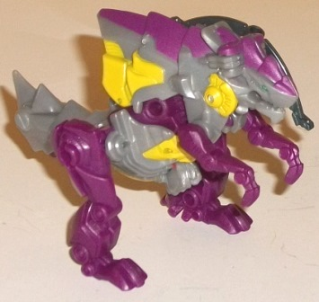
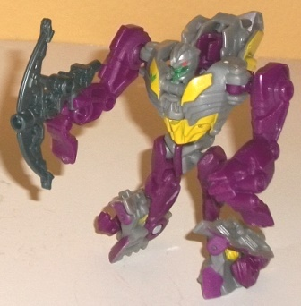
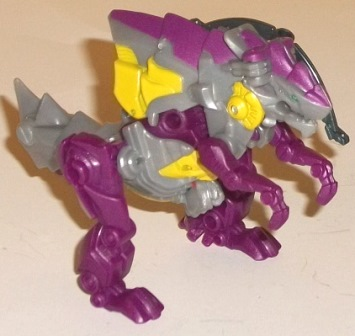
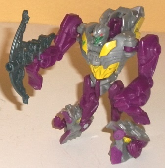
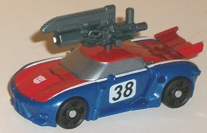
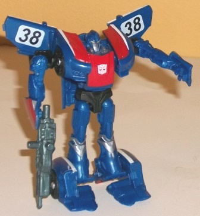

 
Allegiance : Predacon
Size : Legion
Difficulty of Transformation : Easy
Color Scheme : Gray, dark violet, and some yellow, dark milky semi-metallic gray, metallic silvery greenish blue, and red
Individual Rating : 7.7
Set Price
: $10 U.S.
Overall Rating
: 7.6
(NOTE: Because this set is composed of repaints,
this is not a full-blown review. This mainly covers any changes made to
the set and the color scheme, and merely compares it to the original versions
of these molds. For a review on the original Beast Hunters Rippersnapper--
the mold used for Cindersaur--go
here
.
For a review on the original Beast Hunters legion class Smokescreen toy,
go
here
.)
 Cindersaur
Cindersaur


Allegiance
: Predacon
Size
: Legion
Difficulty of Transformation
: Easy
Color Scheme
: Gray, dark violet,
and some yellow, dark milky semi-metallic gray, metallic silvery greenish
blue, and red
Individual Rating
: 7.7
Cindersaur is a light
homage to the G1 Firecon of the same name, who was also a two-legged monster
with little T-rex limbs. Like the original Cindersaur, dark violet is a
major color here, though unlike on the original, gray is used a lot more.
Yellow is still certainly apparent on the toy on places like the middle
of the body in both beast and robot modes, but it's not used nearly as
much as the other two colors. This is generally for the worse, I think,
and my preferences here have nothing to do with the color scheme not being
"G1 enough"; rather, the gray just doesn't contrast as well with the dark
purple as yellow does. When the yellow and purple DO meet up, it looks
nice, but unfortunately they mostly don't on this toy. Plus, with the gray
in the exact same places here as on Rippersnapper (albeit a darker shade
of gray), and the yellow paint in nearly all the same places as on the
Rippersnapper toy as well (Cindersaur has yellow on his stomach whereas
Rippersnapper does not, but that's the only difference here)-- it all makes
Cindersaur look a bit closer to this mold's original scheme than I'd like.
He's basically duller Rippersnapper with purple instead of blue, and I
feel he would've been much more exciting had they mixed up his colors more.
However, I will say that the sparsely-used metallic greenish blue used
for Cindersaur's beast eyes and robot face is a REALLY nice, eye-catching
shade that I wish had been used on a few other minor places to help accent
the colors a bit more. Cindersaur's robot face looks particularly fiercesome
with its bluish-green face and red eyes. Cindersaur's crossbow weapon is
also a rather nice shade of semi-metallic gray-- almost a gunmetal-- that
is certainly a fitting color for the weapon.
No mold changes have
been made to Cindersaur (though the robot head stays on a bit better than
on my regular Rippersnapper).
 Smokescreen
Smokescreen


Allegiance
: Autobot
Size
: Legion
Difficulty of Transformation
: Very
Easy
Color Scheme
: Dark blue, red, and
some silver, white, dark milky semi-metallic bluish gray, and black
Individual Rating
: 7.5
It was pretty inevitable;
Prime Smokescreen has gotten a redeco in the color scheme of his
original
G1 toy
. In vehicle mode in particular, this is a VERY close approximation
of his G1 color layout (but a bit less detailed here because of the smaller
size). He's got a nice, solid shade of red paint on the top, white stripes
along the sides, and dark blue plastic at the lower sides, complete with
"38" racing number markers on his doors. He's missing the other white stripe
along the bottom of the vehicle mode, though on such a small toy that extra
detail seems unnecessary to me. The blue on this version is also a bit
darker than on the G1 toy. Overall I'm surprised how well it all works
on the Prime Smokescreen mold. The colors are basic, but all of them contrast
well with each other, and the dark blue works even better than G1 Smokescreen's
slightly lighter blue. The white stripes in particular help to make the
vehicle mode more eye-catching. The windows-- and some of the robot paint
detailing-- are a solid silver which goes great with the dark blue in robot
mode, though as far as the windows in vehicle mode making them a bit darker
would've helped the contrast more. This is a rather minor quibble, though;
the windows still look pretty good. I also wish more of the red showed
up in robot mode, as he's a bit overly blue in that mode. Smokescreen has
solid black plastic for his wheels and some minor robot parts, which--
even though it's a minor color-- looks considerably better than the "impure"
charcoal black on the original release of this mold. Smokescreen's chainsaw
weapon is colored a really nice metallic bluish gray, which complements
his dark blue quite well.
No mold changes have
been made to this version of Smokescreen.
The Smokescreen &
Cindersaur set is about middle-of-the-road as far as Legion-class toys
and Legion-class sets go. Both are decent molds-- not bad but not particularly
awesome, either. The color scheme for Cindersaur is pretty nice by itself,
but it takes too much from Rippersnapper to make Cindersaur look completely
like his own 'bot. The Smokescreen G1 redeco is done considerably better,
and looks particularly dynamic in vehicle mode, but it is one of the weaker
Beast Hunters Cybeverse molds, and he could've used a bit less blue in
robot mode. Mildly recommended if you like Legion-scale Transformers.
Reviews by Beastbot